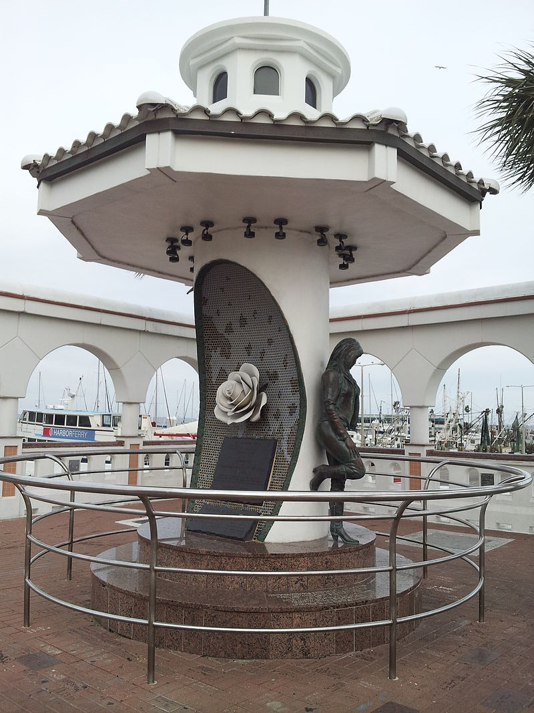

Después de la muerte de Selena se publicaron diversas recopilaciones de sus obras a través de la discográfica EMI que incluían temas en inglés, y otras con canciones de grandes compositores, tales como «Tú, solo tú» y «Tres veces no» (Siempre Selena y All My Hits), al igual que la parte del disco que había grabado en inglés, así como nuevas versiones de algunos de sus más grandes éxitos, el cual fue titulado Dreaming of You. Dentro de sus aportes musicales, se destaca por ser la primera cantante en denominar formalmente a la tecnocumbia como aquel género que se propagaría años después en México, Centroamérica y en el sur del continente, formalizado así su tema homónimo "Tecnocumbia", el cual se convertiría en una variante de la cumbia mexicana. La venta de sus discos creció espectacularmente naciendo así un mito. Su repercusión fue tal, que la revista «People» le dedicó su portada una semana después de morir e incluso un número conmemorativo.
En marzo de 1997, llegó a los cines la película Selena sobre la vida de la artista texana, protagonizada por Jennifer Lopez, dando vida a la cantante. La cinta fue dirigida por Gregory Nava y producida por el papá Selena, Abraham Quintanilla Jr. La película fue un éxito en taquilla y multipremiada. Tiene como logros el catapultar al estrellato la carrera de Jennifer López y llevarla a su primera nominación a los Premios Globo de Oro en la categoría de Mejor Actriz de una película musical.
El 7 de abril de 2005, se llevó a cabo un concierto en homenaje por su décimo aniversario luctuoso en el Reliant Stadium ubicado en Houston Texas, cerca de donde Selena realizó su último concierto en febrero de 1995. Fue titulado Selena ¡VIVE! y transmitido por Univisión. Batió récords de audiencia y se convirtió en la transmisión en español más vista en la historia de la televisión estadounidense.
El 30 de agosto de 2016, el museo de cera Madame Tussaud's de Los Ángeles reveló una figura de cera de la cantante que tiene un costo aproximado de 350 mil dólares y de la misma manera en el museo de la ciudad de Nueva York. Ese mismo año la línea de maquillaje MAC lanzó una edición limitada de cosméticos inspirados en los que usaba Selena, agotándose a las horas de su lanzamiento y batiendo récords de ventas.
El 17 de octubre de 2017, Google a través de un doodle le rinde homenaje a Selena, con un video animado que resume la vida de ella. Cabe destacar que la fecha coincide con el aniversario del lanzamiento de primer trabajo discográfico de Selena en la discográfica EMI en 1989.
El 3 de noviembre del 2017, la cámara de comercio de Los Ángeles le otorgó una estrella en el prestigioso Paseo de la fama de Hollywood a Selena en la categoría de Grabación que está ubicada a las afueras del edificio histórico de Capitol Records. Selena calificaba con todos los requisitos requeridos a pesar de su corta edad y carrera. En una inusual ceremonia nocturna asistieron más de 4500 personas, batiendo récord de asistencia, superando así a la ceremonia inaugural de la estrella de Vicente Fernández quien tenía el récord anterior. Esa misma noche su compañía disquera le entregó un disco de 7x diamante a la familia Quintanilla por las altas ventas de sus discos.
En 2018, Telemundo estrenó la serie El secreto de Selena basada en el libro de la periodista puertorriqueña Maria Celeste Arrarás. Donde se narra un punto de vista imparcial sobre el caso del asesinato de la cantante, no siendo una serie biográfica, sino policial. Dicha serie no contó con la aprobación de la familia Quintanilla y tuvo como protagonista a la actriz mexicana Maya Zapata.
En diciembre de 2018, Netflix lanzó un teaser de 15 segundos anunciando que se realizaría una serie biográfica sobre la vida de la cantante Selena. En agosto de 2019, la actriz Christian Serratos conocida por sus papeles como Rosita Espinoza de la serie The walking dead, la saga de Crepúsculo, entre otros. Estaba en negociaciones con la compañía de streaming para interpretar a la artista y el 12 de noviembre de 2019 se lanzó un avance promocional en donde se le puede ver a la actriz ensayando los míticos pasos de baile con el legendario jumpsuit morado y se estrenará en diciembre de 2020. Constará de dos partes, ambas de 10 capítulos de una hora cada uno.
En agosto de 2020, durante la ceremonia de entrega de los Premios Juventud, se llevó a cabo un tributo a la cantante, donde participaron artistas como Karol G, Danna Paola, Natti Natasha, Greeicy y Ally Brooke.